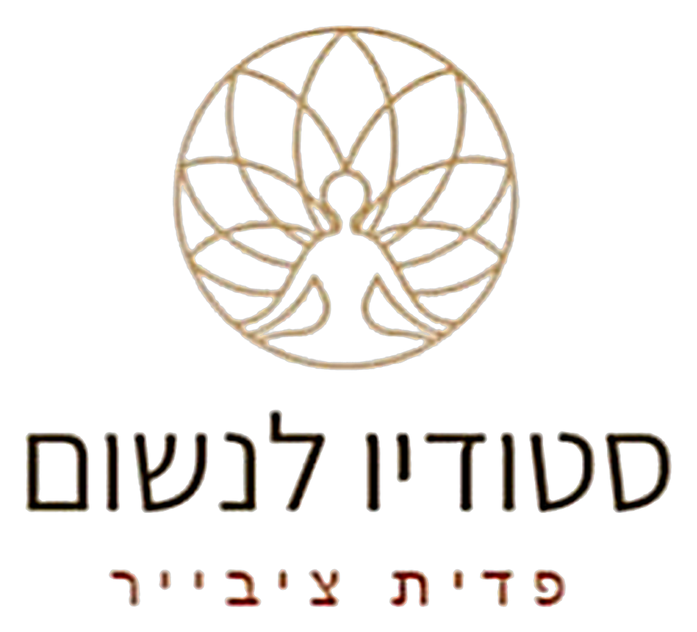

דרך גופנית פשוטה ועמוקה לשחרר מתח מהגוף ולהרפות — דרך מנגנון הרעד הטבעי של הגוף.
אני רוצה ללמוד פשוט לרעודהראש כבר רוצה לנוח, אבל הגוף עוד לא קיבל את ההודעה.
הכתפיים מכווצות, הנשימה קצרה, ויש תחושה שצריך להיות כל הזמן בכוננות — גם כשבעצם אין סיבה.
אנחנו מנסים להירגע: לנשום עמוק, לצאת להליכה, להגיד לעצמנו ״די, תרפה״. ובכל זאת, משהו בגוף ממשיך להחזיק.
ומה אם לגוף יש דרך משלו לפרוק את המתח הזה — דרך שרובנו כמעט לא מכירים?
חשבו על הרגע שבו רועדים מקור, מהתרגשות לפני רגע חשוב, או אחרי מאמץ גדול. הרעד הזה הוא תגובה טבעית של הגוף. ב־TRE לומדים להזמין אותו בעדינות ובהדרגה — ולגלות מה קורה כשנותנים לו מקום.
TRE – Tension & Trauma Releasing Exercises שיטה פשוטה ומפתיעה שפיתח ד״ר דיוויד ברסלי, מאפשרת לגוף לשחרר מתחים ועומסים שהצטברו בו, לפעמים אפילו בלי שאנחנו מודעים אליהם.
באמצעות כמה תרגילים פשוטים אנחנו מעוררים בגוף מנגנון טבעי ומולד של רעד, שעוזר לו לפרוק מתח ולהרפות.
היופי בשיטה הוא שלא צריך לדבר על מה שעברנו, לנתח או להתאמץ כדי להירגע. אנחנו פשוט נותנים לגוף להוביל, בקצב שלו.
אנשים רבים מספרים על תחושה נפלאה של שחרור, קלילות, שקט פנימי ורוגע עמוק בעקבות התרגול.
זו הזדמנות לגלות דרך חדשה להקשיב לגוף, להתחבר אליו ולתת לו לשחרר את מה שהוא כבר לא צריך להחזיק.
רוצים לראות איך זה נראה?
סרטון מצויר של כחמש דקות שמציג את השיטה, עם כתוביות בעברית.
הכתוביות בעברית יופיעו כאן בזמן הניגון
הכתוביות הן תרגום של הקריינות באנגלית. הסרטון הוא הקדמה כללית לשיטה.
ארבעת המפגשים הם תהליך אחד. בכל מפגש נתרגל יחד, נעמיק עוד קצת, ונבנה בהדרגה את הביטחון לתרגל גם לבד.
כלי גופני להורדת מתח ועומס, שמשתלב עם מה שאתם כבר מכירים, או פותח דלת חדשה לגמרי.
תגלו איך הרעד מתעורר אצלכם ואיך הוא נע בגוף. אצל כל אחד ואחת זה נראה קצת אחרת.
תלמדו לשים לב לתחושות שעולות בזמן התרגול, ולתת לגוף להוביל בקצב שנכון לו.
תלמדו להשפיע על עוצמת הרעד: להעמיק כשמתאים, להאט, ולעצור כשרוצים. אתם מחליטים.
תצאו עם תרגול שאפשר להמשיך בבית, בהתאם להתאמה האישית שתלמדו בסדנה.
הסדנה מתקיימת בקבוצה של עד 10 משתתפים בלבד, כדי שאוכל לראות כל אחד ואחת, ללוות את התרגול מקרוב ולשמור על מרחב אישי, בטוח ונינוח.
כל מפגש משלב תרגול, הסבר קצר ומקום לשאלות ולשיתוף, למי שרוצה. אין חובה לדבר.
במצבים רפואיים או נפשיים מסוימים חשוב לבדוק התאמה לפני ההרשמה. פרטים בשאלות הנפוצות.
מילים ששיתפו משתתפים בסדנה קודמת שלי, ״הוויה מתגלה״, שבה שילבנו את תרגול ה־TRE לצד כלים נוספים.
דרך ה־TRE למדתי להקשיב לגוף שלי ולסמוך עליו, וזה משהו שלא הכרתי קודם.
הרגשתי שפשוט יצרת מקום שאפשר להיות בו. בלי מסכות, בלי להוכיח כלום, פשוט להיות.
שליטה מלאה בחומר, נוכחות בכל שלב, רגישות גבוהה לבני אדם ולמה שהם עוברים וחווים.
שמחה מאד שנתתי לעצמי את המתנה הזאת וממליצה בחום.
מנחה מוסמכת בשיטת TRE, פסיכותרפיה, פוקוסינג, נשימה, יוגה ועוד
אני מגיעה מעולמות הפסיכותרפיה, הפוקוסינג, הנשימה והיוגה, וכבר שנים מלווה אנשים בתהליכי גוף־נפש, בין השאר בהתמודדות עם פוסט־טראומה, חרדה ודיכאון.
תמיד ריתק אותי המפגש בין הגוף, הנפש והתודעה, ובעיקר האפשרות לא רק להבין דברים בראש, אלא לאפשר לשינוי לקרות גם דרך הגוף.
ואז פגשתי את ה־TRE. אחרי כל השנים שבהן עבדתי עם הגוף, הוא עדיין הצליח להפתיע אותי. ריתק אותי כמה ישיר ופשוט אפשר לפגוש את היכולת של הגוף לפרוק מתח ולהרפות. ידעתי שזה כלי שאני רוצה להמשיך לחקור, להעמיק בו וללמד.
היום אני מתרגלת בעצמי, מוסמכת כ־TRE Provider, ומלמדת ומלווה אנשים בתרגול. בסדנה תלמדו לא רק את התרגילים, אלא גם איך לעבוד בטוח ונכון, איך להתאים את התרגול לקצב האישי של מערכת העצבים שלכם, תלמדו איך להקשיב לגוף שלכם ותצאו עם מספיק ביטחון כדי להמשיך גם אחרי הסדנה לתרגל בבית בעצמכם.
לכרטיס הביקור ולפירוט ההכשרות שליההרשמה היא לארבעת המפגשים כתהליך אחד.
לא. לא צריך ניסיון קודם וגם לא גמישות או כושר מיוחד. התרגילים פשוטים ואלמד אותם צעד אחר צעד.
כן. התרגילים מזמינים את הרעד, אבל לא מייצרים אותו בכוח. אצל אנשים רבים הוא מתעורר באופן בלתי רצוני, ולא פעם זה מפתיע בהתחלה. אצל כל אחד ואחת הוא נראה אחרת.
זה קורה, וזה בסדר גמור. אצל חלק מהאנשים הרעד מתעורר כבר בפעם הראשונה, ואצל אחרים לוקח לו זמן. אין כאן מבחן, ואין ״הצלחה״ או ״כישלון״. נתרגל בסבלנות ונמצא יחד את הדרך שמתאימה לגוף שלכם.
כן, בכל רגע. חלק מרכזי בלמידה הוא בדיוק זה: איך להאט, איך להפחית את העוצמה ואיך לעצור. אתם בשליטה לאורך כל התרגול.
בהחלט. למרות השם, לא צריך לעבור טראומה כדי ללמוד TRE. רבים מגיעים פשוט כדי להתמודד טוב יותר עם מתח ועומס, להרפות, או מתוך סקרנות להכיר כלי חדש.
זו אחת המטרות של הסדנה. לאורך המפגשים נבנה בהדרגה את ההבנה ואת הביטחון שתצטרכו, ונדבר על מינון ותדירות שמתאימים לכם, כדי שתוכלו להמשיך לתרגל באופן עצמאי.
כן. TRE אינו טיפול רפואי או נפשי ואינו תחליף לו. במצבים מסוימים, כמו הריון, ניתוח או פציעה טרייה, מצב רפואי מורכב (למשל מחלת לב או אפילפסיה) או מצב נפשי רגיש, חשוב לבדוק התאמה לפני ההרשמה. אם יש לכם ספק, כתבו לי ונבדוק יחד.
אנחנו לא צריכים להבין עוד, לנתח עוד או להתאמץ כדי לשחרר.
אפשר פשוט לתת לגוף לעשות את מה שהוא יודע.
אני מזמינה אתכם לבוא ללמוד פשוט לרעוד.
